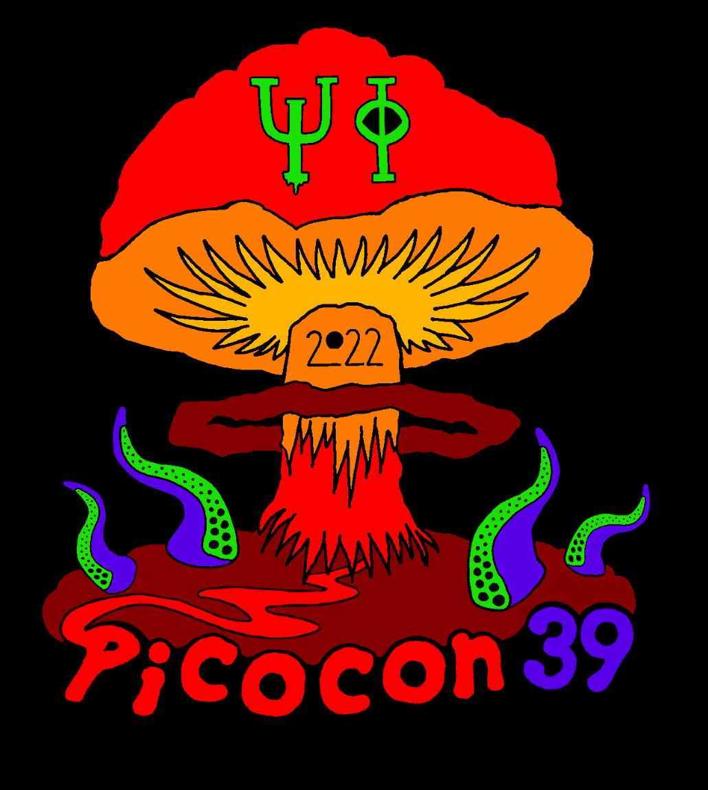

Picocon 39 was held on Saturday 5th March, 2022, 10am - 6pm @ Blackett LT1, online.
Picocon is the annual Science Fiction & Fantasy convention run by the Imperial College Science Fiction and Fantasy Society, ICSF. We try not to clash with other conventions around the same time.
Our annual convention, Picocon 39 will be held this year at 10am-6pm on March the 5th in person, with the theme of Apocalypse and Dystopia.
For those who have not been to a Picocon before we will have
As it will be held in person we will be limiting attendees to 100 and will require evidence of a negative Covid test from all attendees.
Speaking at Picocon 39 this year will be:
Bryony Pearce is a multi-award-winning novelist working in both the YA and Adult markets. She writes science fiction short stories, adult thrillers and a mixture of young adult dystopia, horror and thrillers. She teaches the course writing for children at City University and has performed at the Edinburgh Literary Festival, The Wychwood Festival, Comicon, YALC, the Sci Fi Weekender, The Just So Festival and a number of other festivals and events.
Previously a teacher Louise was discovered as a writer at the Primadonna festival 2019. Her debut novel, Sleepless, a “frighteningly inventive” thriller inspired by her own insomnia, was published in December 2020 by HQ HarperCollins and became a UK Amazon Kindle bestseller.
Gareth Powell is an award winning British Sci-Fi author, most well known for his two Trilogies Embers of War & Ack-Ack Macaque. To date he has written and published nine novels, two short story collections, and has even tried his hand at screenplays and comic. Gareth has also written freelance for The Guardian amongst others, and is a regular columnist for The Engineer.
Matthew Wraith is a seasonal lecturer in science fiction, culture and at imperial this includes running the Science Fiction horizons course in first year. Their area of knowledge includes futurism, particularly within science fiction.
A.J. Flowers is a USA Today Bestselling fantasy author based out of Detroit. She writes young adult and epic fantasy books as well as post-apocalyptic thrillers under the name Eva Storm.
Brendan DuBois is the New York Times bestselling author of twenty-four novels including the dark victory sci fi trilogy. He has won the Shamus Award from the Private Eye Writers of America, two Barry Awards, two Derringer Awards, the Ellery Queen Readers Award, and three Edgar Allan Poe Award nominations from the Mystery Writers of America.
| 10:00 | Guest Talk 1 Bryony Pearce |
| 11:00 | Guest Talk 2 Matthew Wraith |
| 11:50 | Guest Talk 3 Louise Mumford |
| 12:40 | Guest Talk 3 Gareth Powell |
| 13:20 - 15:00 | Lunch, Games, Charity Events |
| 15:00 | Guest Talk 4 A.J. Flowers |
| 16:00 | Panel |
| 17:00 | Quiz |
Additionally, for those who cannot attend in person we will be streaming the talks.
All the talks and panel discussion will be streamed live on our Youtube channel
For more information, please contact Thomas Blore, the Picocon Sofa (comfier than a chair), at icsf.picoconsofa@gmail.com.
Our mail address is the following:
ICSF
Student Activities Centre
Imperial College Students' Union
Beit Quad
Prince Consort Road
London
SW7 2BB
UK